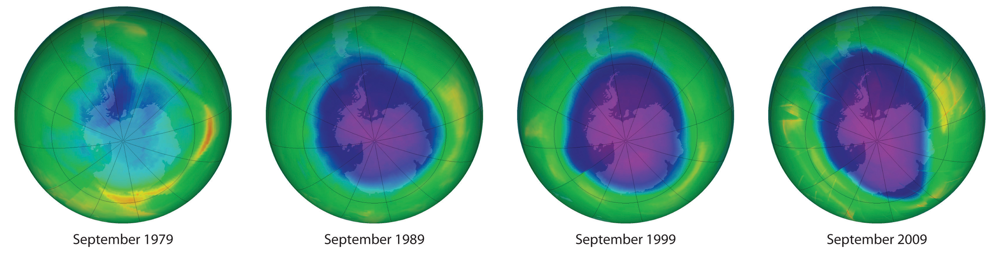
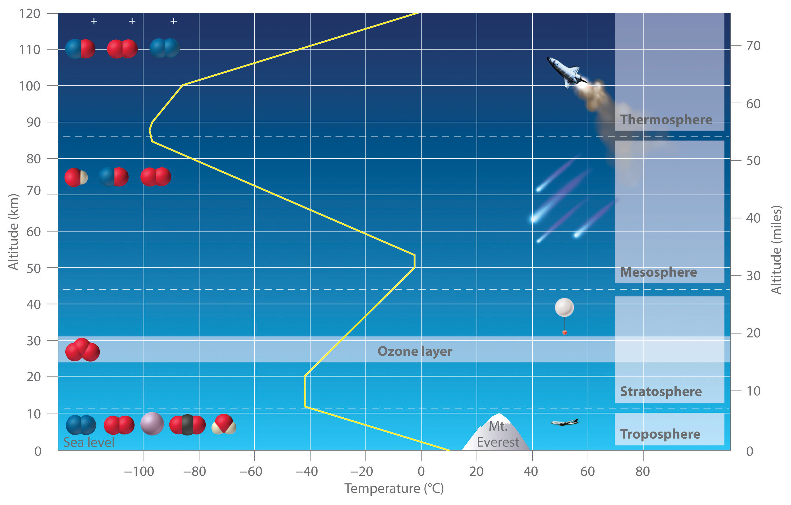
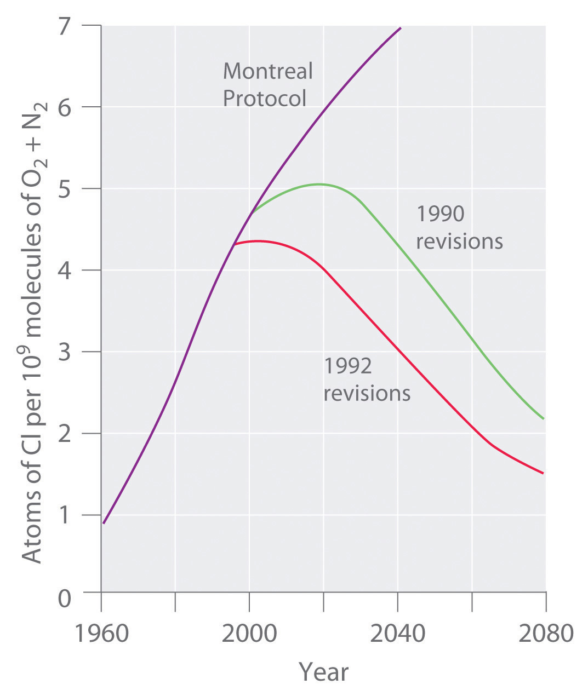

Section 3.5 "Classifying Chemical Reactions" described different classes of chemical reactions. Of the many different chemical reactions that occur in Earth’s atmosphere, some are important and controversial because they affect our quality of life and health. The atmospheric reactions presented in this section provide examples of the various classes of reactions introduced in this chapter that are implicated in the destruction of Earth’s protective ozone layerA concentration of ozone in the stratosphere (about 1015 ozone molecules per liter) that acts as a protective screen, absorbing ultraviolet light that would otherwise reach the surface of the earth, where it would harm plants and animals..
Each year since the mid-1970s, scientists have noted a disappearance of approximately 70% of the ozone (O3) layer above Antarctica during the Antarctic spring, creating what is commonly known as the “ozone hole.” OzoneAn unstable form of oxygen that consists of three oxygen atoms bonded together (O3). A layer of ozone in the stratosphere helps protect the plants and animals on earth from harmful ultraviolet radiation. Ozone is responsible for the pungent smell we associate with lightning discharges and electric motors. It is also toxic. is an unstable form of oxygen that consists of three oxygen atoms bonded together. In September 2009, the Antarctic ozone hole reached 24.1 million km2 (9.3 million mi2), about the size of North America. The largest area ever recorded was in the year 2000, when the hole measured 29.9 million km2 and for the first time extended over a populated area—the city of Punta Arenas, Chile (population 154,000; Figure 3.15 "Satellite Photos of Earth Reveal the Sizes of the Antarctic Ozone Hole over Time"). A less extensive zone of depletion has been detected over the Arctic as well. Years of study from the ground, from the air, and from satellites in space have shown that chlorine from industrial chemicals used in spray cans, foam packaging, and refrigeration materials is largely responsible for the catalytic depletion of ozone through a series of condensation, cleavage, and oxidation–reduction reactions.
Figure 3.15 Satellite Photos of Earth Reveal the Sizes of the Antarctic Ozone Hole over Time
Dark blue colors correspond to the thinnest ozone; light blue, green, yellow, orange, and red indicate progressively thicker ozone. In September 2000, the Antarctic ozone hole briefly approached a record 30 million km2.
Earth’s atmosphere at sea level is an approximately 80:20 solution of nitrogen and oxygen gases, with small amounts of carbon dioxide, water vapor, and the noble gases, and trace amounts of a variety of other compounds (Table 3.2 "The Composition of Earth’s Atmosphere at Sea Level*"). A key feature of the atmosphere is that its composition, temperature, and pressure vary dramatically with altitude. Consequently, scientists have divided the atmosphere into distinct layers, which interact differently with the continuous flux of solar radiation from the top and the land and ocean masses at the bottom. Some of the characteristic features of the layers of the atmosphere are illustrated in Figure 3.16 "Variation of Temperature with Altitude in Earth’s Atmosphere".
Table 3.2 The Composition of Earth’s Atmosphere at Sea Level*
| Gas | Formula | Volume (%) |
|---|---|---|
| nitrogen | N2 | 78.084 |
| oxygen | O2 | 20.948 |
| argon | Ar | 0.934 |
| carbon dioxide† | CO2 | 0.0314 |
| neon | Ne | 0.00182 |
| helium | He | 0.000524 |
| krypton | Kr | 0.000114 |
| methane | CH4 | 0.0002 |
| hydrogen | H2 | 0.00005 |
| nitrous oxide | N2O | 0.00005 |
| xenon | Xe | 0.0000087 |
| * In addition, air contains as much as 7% water vapor (H2O), 0.0001% sulfur dioxide (SO2), 0.00007% ozone (O3), 0.000002% carbon monoxide (CO), and 0.000002% nitrogen dioxide (NO2). | ||
| † Carbon dioxide levels are highly variable; the typical range is 0.01–0.1%. | ||
Figure 3.16 Variation of Temperature with Altitude in Earth’s Atmosphere
Note the important chemical species present in each layer. The yellow line indicates the temperature at various altitudes.
The troposphereThe lowest layer of the atmosphere, the troposphere extends from earth’s surface to an altitude of about 11–13 km (7–8 miles). The temperature of the troposphere decreases steadily with increasing altitude. is the lowest layer of the atmosphere, extending from Earth’s surface to an altitude of about 11–13 km (7–8 mi). Above the troposphere lies the stratosphere, which extends from 13 km (8 mi) to about 44 km (27 mi). As shown in Figure 3.16 "Variation of Temperature with Altitude in Earth’s Atmosphere", the temperature of the troposphere decreases steadily with increasing altitude. Because “hot air rises,” this temperature gradient leads to continuous mixing of the upper and lower regions within the layer. The thermally induced turbulence in the troposphere produces fluctuations in temperature and precipitation that we collectively refer to as “weather.” In contrast, mixing between the layers of the atmosphere occurs relatively slowly, so each layer has distinctive chemistry. We focus our attention on the stratosphere, which contains the highest concentration of ozone.
The sun’s radiation is the major source of energy that initiates chemical reactions in the atmosphere. The sun emits many kinds of radiation, including visible lightRadiation that the human eye can detect., which is radiation that the human eye can detect, and ultraviolet lightHigh-energy radiation that cannot be detected by the human eye but can cause a wide variety of chemical reactions that are harmful to organisms., which is higher energy radiation that cannot be detected by the human eye. This higher energy ultraviolet light can cause a wide variety of chemical reactions that are harmful to organisms. For example, ultraviolet light is used to sterilize items, and, as anyone who has ever suffered a severe sunburn knows, it can produce extensive tissue damage.
Light in the higher energy ultraviolet range is almost totally absorbed by oxygen molecules in the upper layers of the atmosphere, causing the O2 molecules to dissociate into two oxygen atoms in a cleavage reaction:
Equation 3.34
In Equation 3.34, light is written above the arrow to indicate that light is required for the reaction to occur. The oxygen atoms produced in Equation 3.34 can undergo a condensation reaction with O2 molecules to form ozone:
Equation 3.35
O(g) + O2(g) → O3(g)Ozone is responsible for the pungent smell we associate with lightning discharges and electric motors. It is also toxic and a significant air pollutant, particularly in cities.
In the stratosphere, the ozone produced via Equation 3.35 has a major beneficial effect. Ozone absorbs the less-energetic range of ultraviolet light, undergoing a cleavage reaction in the process to give O2 and O:
Equation 3.36
The formation of ozone (Equation 3.35) and its decomposition (Equation 3.36) are normally in balance, resulting in essentially constant levels of about 1015 ozone molecules per liter in the stratosphere. This so-called ozone layer acts as a protective screen that absorbs ultraviolet light that would otherwise reach Earth’s surface.
In 1974, F. Sherwood Rowland and Mario Molina published a paper claiming that commonly used chlorofluorocarbon (CFC) compounds were causing major damage to the ozone layer (Table 3.3 "Common CFCs and Related Compounds"). CFCs had been used as refrigerants and propellants in aerosol cans for many years, releasing millions of tons of CFC molecules into the atmosphere. Because CFCs are volatile compounds that do not readily undergo chemical reactions, they persist in the atmosphere long enough to be carried to the top of the troposphere, where they eventually enter the stratosphere. There they are exposed to intense ultraviolet light and undergo a cleavage reaction to produce a chlorine atom, which is shown for Freon-11:
Equation 3.37
The resulting chlorine atoms act as a homogeneous catalyst in two redox reactions (Equation 3.38 and Equation 3.39):
Equation 3.38
Cl(g) + O3(g) → ClO(g) + O2(g)Equation 3.39
ClO(g) + O(g) → Cl(g) + O2(g)Adding the two reactions in Equation 3.38 and Equation 3.39 gives
Equation 3.40
Cl(g) + O3(g) + ClO(g) + O(g) → ClO(g) + Cl(g) + 2O2(g)Because chlorine and ClO (chlorine monoxide) appear on both sides of the equation, they can be canceled to give the following net reaction:
Equation 3.41
O3(g) + O(g) → 2O2(g)In the presence of chlorine atoms, one O3 molecule and one oxygen atom react to give two O2 molecules. Although chlorine is necessary for the overall reaction to occur, it does not appear in the net equation. The chlorine atoms are a catalyst that increases the rate at which ozone is converted to oxygen.
Table 3.3 Common CFCs and Related Compounds
| Name | Molecular Formula | Industrial Name |
|---|---|---|
| trichlorofluoromethane | CCl3F | CFC-11 (Freon-11) |
| dichlorodifluoromethane | CCl2F2 | CFC-12 (Freon-12) |
| chlorotrifluoromethane | CClF3 | CFC-13 (Freon-13) |
| bromotrifluoromethane | CBrF3 | Halon-1301* |
| bromochlorodifluoromethane | CBrClF2 | Halon-1211 |
| *Halons, compounds similar to CFCs that contain at least one bromine atom, are used as fire extinguishers in specific applications (e.g., the engine rooms of ships). | ||
Because the stratosphere is relatively isolated from the layers of the atmosphere above and below it, once chlorine-containing species enter the stratosphere, they remain there for long periods of time. Each chlorine atom produced from a CFC molecule can lead to the destruction of large numbers of ozone molecules, thereby decreasing the concentration of ozone in the stratosphere. Eventually, however, the chlorine atom reacts with a water molecule to form hydrochloric acid, which is carried back into the troposphere and then washed out of the atmosphere in rainfall.
Massive ozone depletions were first observed in 1975 over the Antarctic and more recently over the Arctic. Although the reactions in Equation 3.38 and Equation 3.39 appear to account for most of the ozone destruction observed at low to middle latitudes, Equation 3.37 requires intense sunlight to generate chlorine atoms, and sunlight is in very short supply during the polar winters. At high latitudes (near the poles), therefore, a different set of reactions must be responsible for the depletion.
Recent research has shown that, in the absence of oxygen atoms, chlorine monoxide can react with stratospheric nitrogen dioxide in a redox reaction to form chlorine nitrate (ClONO2). When chlorine nitrate is in the presence of trace amounts of HCl or adsorbed on ice particles in stratospheric clouds, additional redox reactions can occur in which chlorine nitrate produces Cl2 or HOCl (hypochlorous acid):
Equation 3.42
HCl(g) + ClONO2(g) → Cl2(g) + HNO3(g)Equation 3.43
H2O(g) + ClONO2(g) → HOCl(g) + HNO3(g)Both Cl2 and HOCl undergo cleavage reactions by even weak sunlight to give reactive chlorine atoms. When the sun finally rises after the long polar night, relatively large amounts of Cl2 and HOCl are present and rapidly generate high levels of chlorine atoms. The reactions shown in Equation 3.38 and Equation 3.39 then cause ozone levels to fall dramatically.
Stratospheric ozone levels decreased about 2.5% from 1978 to 1988, which coincided with a fivefold increase in the widespread use of CFCs since the 1950s. If the trend were allowed to continue, the results could be catastrophic. Fortunately, many countries have banned the use of CFCs in aerosols. In 1987, representatives from 43 nations signed the Montreal Protocol, committing themselves to reducing CFC emissions by 50% by the year 2000. Later, representatives from a large number of countries, alarmed by data showing the rapid depletion of stratospheric chlorine, agreed to phase out CFCs completely by the early 21st century; the United States banned their use in 1995. The projected effects of these agreements on atmospheric chlorine levels are shown in Figure 3.17 "Projected Effects of International Agreements on Atmospheric Chlorine Levels". Because of the very slow rate at which CFCs are removed from the stratosphere, however, stratospheric chlorine levels will not fall to the level at which the Antarctic ozone hole was first observed until about 2050. The scientific community recognized Molina and Rowland’s work in 1995, when they shared the Nobel Prize in Chemistry.
Figure 3.17 Projected Effects of International Agreements on Atmospheric Chlorine Levels
The graph plots atmospheric chlorine content in chlorine atoms per 109 molecules of O2 plus N2 from 1960 to 1990 (actual data) and 1990 to 2080 (estimated for various schemes for regulating CFC emissions).
Manufacturing companies are now under great political and economic pressure to find alternatives to the CFCs used in the air-conditioning units of cars, houses, and commercial buildings. One approach is to use hydrochlorofluorocarbons (HCFCs), hydrocarbons in which only some of the hydrogen atoms are replaced by chlorine or fluorine, and hydrofluorocarbons (HFCs), which do not contain chlorine (Table 3.4 "Selected HCFCs and HFCs"). The C–H bonds in HCFCs and HFCs act as “handles” that permit additional chemical reactions to occur. Consequently, these substances are degraded more rapidly, and most are washed out of the atmosphere before they can reach the stratosphere.
Table 3.4 Selected HCFCs and HFCs
| Name | Molecular Formula | Industrial Name |
|---|---|---|
| chlorodifluoromethane | CHClF2 | HCFC-22 (freon-22) |
| 1-chloro-1,1-difluoroethane | CH3CClF2 | HCFC-141b |
| 2,2-dichloro-1,1,1-trifluoroethane | CHCl2CF3 | HCFC-123 |
| 1,1,1,2-tetrafluoroethane | CH2FCF3 | HFC-134a |
HFCs are used as a replacement for CFCs. The molecular structure of HFC-134a is shown in this ball-and-stick model.
Nonetheless, the small fraction of HCFCs that reaches the stratosphere will deplete ozone levels just as CFCs do, so they are not the final answer. Indeed, the 1990 London amendment to the Montreal Protocol specifies that HCFCs must be phased out by 2040. Finding a suitable replacement for refrigerants is just one of the challenges facing chemists in the 21st century.
Nitric oxide (NO) may also be an important factor in the destruction of the ozone layer. One source of this compound is the combustion of hydrocarbons in jet engines. The fact that high-flying supersonic aircraft inject NO directly into the stratosphere was a major argument against the development of commercial supersonic transports. Do you agree with this decision? Why or why not?
Given: identity of compound
Asked for: assessment of likely role in ozone depletion
Strategy:
Predict what reactions are likely to occur between NO and ozone and then determine whether the reactions are likely to deplete ozone from the atmosphere.
Solution:
Both NO and NO2 are known oxides of nitrogen. Thus NO is likely to react with ozone according to the chemical equation
NO(g) + O3(g) → NO2(g) + O2(g)resulting in ozone depletion. If NO2(g) also reacts with atomic oxygen according to the equation
NO2(g) + O(g) → NO(g) + O2(g)then we would have a potential catalytic cycle for ozone destruction similar to that caused by chlorine atoms. Based on these reactions, the development of commercial supersonic transports is not recommended until the environmental impact has undergone additional testing. (Although these reactions have been observed, they do not appear to be a major factor in ozone destruction.)
Exercise
An industrial manufacturer proposed that halons such as CF3Br could be used as replacements for CFC propellants. Do you think that this is a reasonable suggestion or is there a potential problem with such a use?
Answer: Because the compound CF3Br contains carbon, fluorine, and a bromine atom that is chemically similar to chlorine, it is likely that it would also be a catalyst for ozone destruction. There is therefore a potential problem with its use.
Earth’s atmosphere consists of discrete layers that do not mix readily with one another. The sun emits radiation with a wide range of energies, including visible light, which can be detected by the human eye, and ultraviolet light, which is more energetic than visible light and cannot be detected by the human eye. In the stratosphere, ultraviolet light reacts with O2 molecules to form atomic oxygen. Atomic oxygen then reacts with an O2 molecule to produce ozone (O3). As a result of this reaction, the stratosphere contains an appreciable concentration of ozone molecules that constitutes the ozone layer. The absorption of ultraviolet light in the stratosphere protects Earth’s surface from the sun’s harmful effects. Volatile organic compounds that contain chlorine and fluorine, which are known as chlorofluorocarbons (CFCs), are capable of reaching the stratosphere, where they can react with ultraviolet light to generate chlorine atoms and other chlorine-containing species that catalyze the conversion of ozone to O2, thereby decreasing the amount of O3 in the stratosphere. Replacing chlorofluorocarbons with hydrochlorofluorocarbons (HCFCs) or hydrofluorocarbons (HFCs) is one strategy that has been developed to minimize further damage to Earth’s ozone layer.
Carbon monoxide is a toxic gas that can be produced from the combustion of wood in wood-burning stoves when excess oxygen is not present. Write a balanced chemical equation showing how carbon monoxide is produced from carbon and suggest what might be done to prevent it from being a reaction product.
Explain why stratospheric ozone depletion has developed over the coldest part of Earth (the poles) and reaches a maximum at the beginning of the polar spring.
What type of reactions produce species that are believed to be responsible for catalytic depletion of ozone in the atmosphere?
Please be sure you are familiar with the topics discussed in Essential Skills 2 (Section 3.7 "Essential Skills 2") before proceeding to the Numerical Problems.
Sulfur dioxide and hydrogen sulfide are important atmospheric contaminants that have resulted in the deterioration of ancient objects. Sulfur dioxide combines with water to produce sulfurous acid, which then reacts with atmospheric oxygen to produce sulfuric acid. Sulfuric acid is known to attack many metals that were used by ancient cultures. Give the formulas for these four sulfur-containing species. What is the percentage of sulfur in each compound? What is the percentage of oxygen in each?